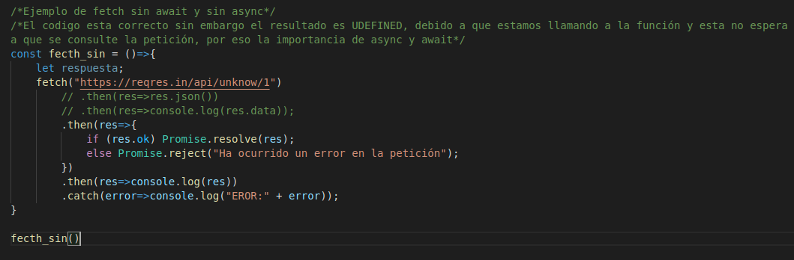
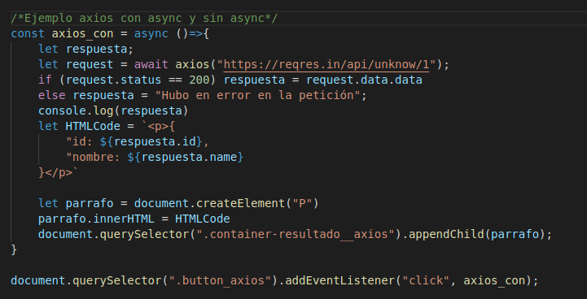

Fetch sin Await y Async: El codigo esta correcto sin embargo el resultado es UDEFINED, debido a que estamos llamando a la función y esta no espera a que se consulte la petición, por eso la importancia de async y await
Codigo Fetch
resultado
Fetch con Await y Async

Axios con Await y Async
